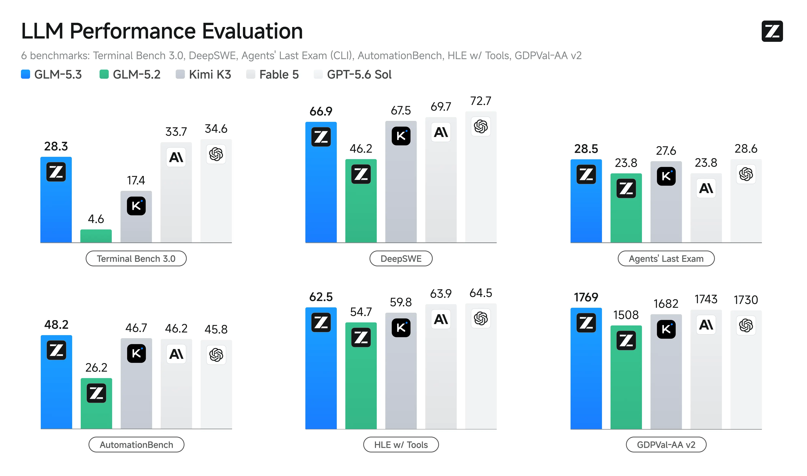
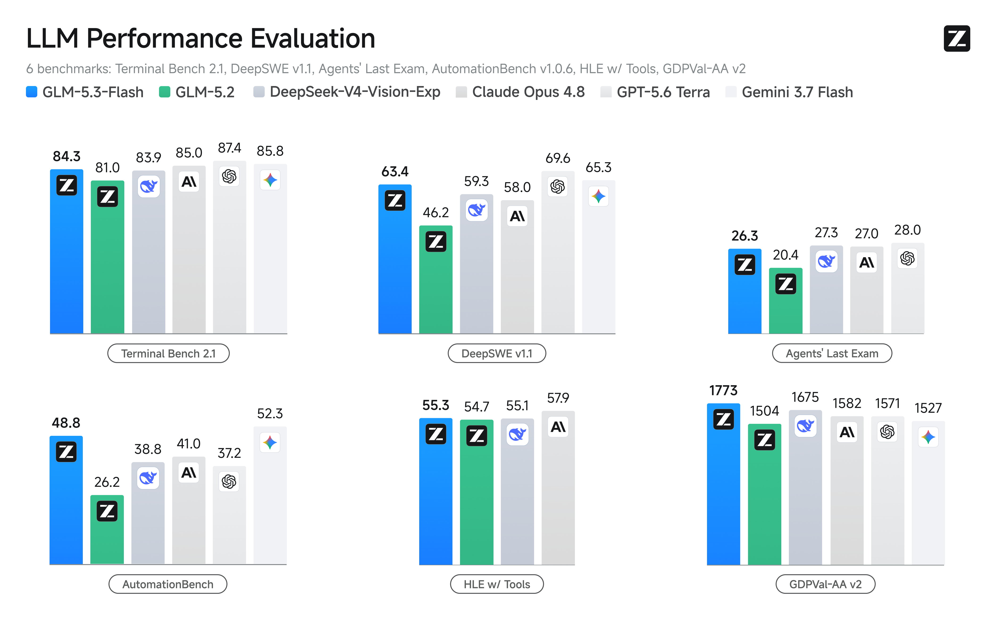

00全景与读法
工业旗舰的迭代通常伴随基座重训——更大参数、新架构、更多预训练 token。GLM-5.3 的反常之处在于基座与 GLM-5.2 一字不动，官方文档明确表述全部能力提升来自后训练 scaling。这使它成为一次难得的受控实验：固定基座、只推 RL，能提升多少？厂商自报的答案是 Terminal-Bench 3.0 由 4.6 跃至 28.3、DeepSWE v1.1 由 46.2 升至 66.9、SWE-Marathon v1.1 由 19.4 升至 42.5；第三方独立评分的答案是 AA 智能指数由 53 升至 60。训练栈是 GLM 全系共用的 slime（异步 RL）+ SAO with compaction + IndexShare + SFT 阶段 INT4 QAT；网络安全为差异化主打；权重已于 08-29 前后落地 HF（zai-org/GLM-5.3），复现窗口开启。
每一节固定三段：朴素基线（左栏，灰：不看 GLM 文档时的直觉做法）/ GLM 的做法（右栏，橙）/ 差在哪（下方色块：差异、原文是否给了理由或证据、对 RL-on-NPU 的含义）。数字按来源标注：第三方 独立评分或独立核查（本篇只有 AA 智能指数 60 与 kingy.ai 的漏洞抽样核查属此类）、自报 厂商口径（全部 benchmark 与漏洞账本）、推断 本站分析（昇腾即插即用、两代对照的部分归因）。
贯穿全文的一条线索：训推一致有三层——数值层（R3 路由回放）、量化层（INT4 QAT 位级一致 kernel）、上下文层（SAO with compaction，在压缩片段上直接训练）。GLM 系是三层解法在单一厂商栈内全部落地的样本，与 D27（数值 / 量化两层）合成完整图景。
01一个反常规的发布：基座不动
GLM-5.3 与 6 月发布的 GLM-5.2 共用同一基座（GLM-5 系技术报告《From Vibe Coding to Agentic Engineering》，arXiv:2602.15763；家族 744B 总参 / 约 40B 激活，5.2 已把上下文由 200K 扩到 1,048,576）。 官方文档明确表述：5.3 相对 5.2 的全部能力提升来自后训练 scaling，基座架构无变化。 厂商自报（自报）：Terminal-Bench 3.0 由 4.6 跃至 28.3、DeepSWE v1.1 由 46.2 升至 66.9、SWE-Marathon v1.1 由 19.4 升至 42.5。 第三方（第三方）：Artificial Analysis 智能指数由 5.2 的 53 独立评为 60，与 Kimi K3 并列开源第一（Claude Opus 5 以 63 领跑）。 这与 D25 的判断直接相关：SFT + 在线 RLVR 主干已成熟，增量在后训练配方与基建——GLM-5.3 是该判断的旗舰级实证。
这张图怎么读
这张图的重点是只有一条实线路径穿过中间的方框：基座节点不分叉，5.2 与 5.3 的差异全部装在"只推后训练"方框里的三项。三项里只有"规模扩大数十倍"是量级表述，"类型扩展"与"时长增加"没有数字——这也是原文没给、复现时必须自定的部分（第 10 节）。
两端的 AA 指数（53 → 60）是全图唯一的第三方数字，放在主链上；自报跳变放在虚线旁注里。读法上应把主链当作"发生了什么"，把旁注当作"厂商说提升了多少"——两者的证据等级不同。7 分的独立指数提升对应的自报单项提升幅度可参看图 2。

这张图怎么读
先只看每个面板的前两根柱（蓝与绿）——这是同一基座、不同后训练的对照，也是本篇的核心变量。Terminal Bench 3.0 由 4.6 到 28.3、DeepSWE 由 46.2 到 66.9 与原文所引一致；AutomationBench 由 26.2 到 48.2、HLE w/ Tools 由 54.7 到 62.5、GDPVal-AA 由 1508 到 1769、Agents' Last Exam 由 23.8 到 28.5。六项全部为长程 agent 或工具使用类任务，且提升幅度最大的两项（Terminal Bench 3.0 约 6 倍、AutomationBench 近 2 倍）恰是最依赖长程环境的任务——这与"长程环境规模扩大数十倍"的训练变量自洽。
再看蓝柱与右侧三根灰柱的关系：Terminal Bench 3.0 上 GLM-5.3（28.3）高于 K3（17.4）但低于 Fable 5（33.7）与 GPT-5.6 Sol（34.6）；DeepSWE 上 66.9 略低于 K3 的 67.5。这张图是厂商自跑，第三方复现前不能作为跨厂商排序依据；能可靠读出的是同基座两代之间的相对变化方向，而不是与其他厂商的绝对位次。
朴素基线
版本号递增即重训基座：更大参数、新架构、更多预训练 token；能力提升归因于基座规模，后训练是收尾环节。
GLM 的做法
基座一字不动，全部提升来自后训练：长程任务环境规模扩大数十倍、环境类型从代码调试扩到安全漏洞发现、后训练时长显著增加。第三方 AA 指数 53 → 60（并列开源第一），自报单项跳变见图 2。
差在哪差别在变量控制：基座固定使后训练的贡献可以被单独读出。原文给出了第三方证据（AA 指数 7 分）与自报证据（单项跳变），并明确区分两者。对 RL-on-NPU 的含义：在能力竞争已从基座规模转向后训练的阶段，同一基座的后训练 scaling 可以把一款模型从中游推到开源第一梯队——这意味着 RL 基建的投入回报可以不依赖预训练算力的再投入。
02训练栈：slime 全系共用
GLM 的后训练能力建立在一套自研且开源的 RL 栈上，GLM-4.5 至 5.3 全系共用（slime，D19 已深挖其 SGLang 原生架构）。 自由形式 rollout 定制 + server-based 执行模型广化任务覆盖；混合精度训练 / rollout + MTP + Prefill-Decode 分离显著提升多轮 RL 吞吐；心跳驱动的 rollout 容错 + router 级服务生命周期管理提升鲁棒性。 slime 提供的灵活 rollout 接口（多轮交互循环、工具调用、环境反馈、verifier 引导分支）正是"数十倍长程环境"得以工程化的底座。

这张图怎么读
要读的是两个颜色块之间只有一条箭头——"update weights"。训练侧（megatron，红）与推理侧（sglang server，绿）是两套独立进程组，权重同步是它们唯一的耦合点；数据不经过训练进程直接进推理引擎，而是绕经 data buffer 与 custom rollout generation 两个黑框。这就是原文所说"server-based 执行模型"：rollout 以服务形式存在，训练器只消费 buffer 里的结果。
右上的"any custom data generation"双向箭头是原文"自由形式 rollout 定制"的位置：多轮交互、工具调用、环境反馈、verifier 引导分支都在这个框里实现，与训练器无关。这解释了为什么"数十倍长程环境"可以在不改训练器的前提下工程化。sglang router 位于 rollout 生成与多个 server 之间，是原文"router 级服务生命周期管理"和"心跳驱动容错"的落点。图中没有画出 MTP 与 Prefill-Decode 分离，它们发生在绿色 server 内部。
朴素基线
训练框架内置 rollout：生成与训练在同一进程组内交替（同步 on-policy），任务类型由框架预设的 prompt → response 单轮接口决定，多轮 / 工具调用需要改框架。
GLM 的做法
slime：训练（Megatron）与推理（SGLang）解耦为两组进程，仅以权重更新耦合；rollout 逻辑外置为可定制服务，支持多轮循环、工具、环境反馈、verifier 分支；混合精度 + MTP + PD 分离提升吞吐，心跳容错与 router 级生命周期管理提升鲁棒性。全系 4.5 → 5.3 共用。
差在哪差别在把 rollout 从训练器的子模块变成独立服务，任务覆盖的扩展不再受训练框架接口约束。原文给出的证据是这套栈被 GLM 全系共用并开源；具体吞吐数字未给。对 RL-on-NPU：解耦架构意味着推理侧可以单独替换为 NPU 上的推理引擎（vLLM-Ascend 已有 GLM-5.2 教程，第 07 节），训练侧与推理侧的硬件不必同构；D33 的 verl 是通用框架件的对照，slime 是专用栈内建的样本。
03SAO with compaction 与 INT4 QAT：训推一致的三层
SAO with compaction——上下文层的训推一致。SAO（单 rollout 采样 + token 级裁剪，D22 记录过其"单 rollout + value model"设计）解决异步 RL 的 off-policy 稳定性；compaction 的关键在于直接在压缩后的片段上训练——长程 agent 轨迹在多小时会话中会出现上下文退化与重复推理循环，compaction 防止状态爆炸，更重要的是使 critic 的价值地形与真实 serving 约束对齐，让训练分布贴近生产推理分布。 INT4 QAT 位级一致 kernel。SFT 阶段引入 INT4 QAT，配套训练与离线量化通用的量化 kernel，保证训推 bitwise 一致（D27 记录过这是"量化层训推一致"的工业级样本，另见 LMSYS INT4 QAT 实践）；5.3 延续该路线。 IndexShare（D06 已详解）：每 4 层稀疏注意力共享 indexer，1M 下 per-token FLOPs 降 2.9×，5.3 延续。

这张图怎么读
三件套的出边方向不同是这张图的信息所在：slime 的实线指向环境与结果——它是能力提升的"产能"来源；SAO 与 QAT 的虚线指向"训推一致三层"——它们不直接产生能力，而是保证产能不被训练分布与推理分布的偏差抵消。原文的表述是：compaction 使训练分布贴近生产推理分布，QAT 使训练与离线量化 bitwise 一致。
"训推一致三层"节点里的第一层"数值 R3"在本篇没有独立小节——它来自 D27（R3 路由回放），此处只作为三层图景的一部分列出。读者应注意：三层中只有量化层有"位级一致"这一可验证的强表述，上下文层的"对齐"是分布层面的、程度未量化，数值层的 R3 是 D27 的记录而非本篇新证。
朴素基线
训练用完整长轨迹，serving 时才做上下文压缩——训练看到的上下文分布与推理时不同；量化在训练后一次性 PTQ，训练 kernel 与推理 kernel 是两套实现，数值不保证一致。
GLM 的做法
SAO with compaction：在压缩后的片段上直接训练，critic 的价值地形与 serving 约束对齐；INT4 QAT 自 SFT 阶段起，训练与离线量化共用同一量化 kernel，bitwise 一致；加 D27 记录的 R3 路由回放，三层合成。
差在哪差别在把"推理时会发生什么"提前写进训练：上下文会被压缩，就在压缩片段上训练；权重会被量化到 INT4，就从 SFT 起按 INT4 训练。原文把这归为同一原则（训推一致）在不同层的应用，并指出 GLM 系是三层在单一厂商栈内全部落地的样本；compaction 的具体算法与消融原文未给。对 RL-on-NPU：INT4 位级一致 kernel 要求训练侧与推理侧共用实现，跨硬件（GPU 训练、NPU 推理）时这一保证需要重新建立——这是昇腾适配中比"能跑"更深一层的要求（推断）。
04环境工程：从编程题到"数天工作量"
后训练 scaling 的实质是环境工程。5.3 的训练任务从孤立编程题扩展为完整工程流程——问题发现 → 方案分析 → 实现 → 验证 → 交付，部分任务相当于资深工程师数天工作量，要求模型使用真实计算集群、存储系统、内部文档与代码库（自报）。 环境合成管线：研究型 agent 从真实工程工作中收集模式，生成可运行的多步带隐藏状态环境；judge agent 先行试解以确认可解性。 这与 D23 圈定的"环境与奖励工程"问题域、D30 讨论的"可验证性"直接相关：环境的可解性预筛正是防止不可验证任务污染 RL 信号的工程手段。
朴素基线
RL 环境 = 带单元测试的孤立编程题（SWE-bench 式），任务粒度为单次修复，环境静态、无隐藏状态，全部人工筛选。
GLM 的做法
任务为完整工程流程（发现 → 分析 → 实现 → 验证 → 交付），部分相当于数天工作量，依赖真实集群、存储、内部文档与代码库；环境由研究型 agent 从真实工作模式合成，多步、带隐藏状态、可运行；judge agent 先行试解做可解性预筛；规模较 5.2 扩大数十倍。
差在哪差别在环境从"题库"变成"合成管线"：规模由合成产能决定，可解性由 judge agent 预筛保证。原文给出了流程描述与"数十倍"量级，未给环境数量、任务时长分布、judge 通过率等数字。对 RL-on-NPU：环境合成与 judge 试解是 CPU / 容器与推理负载，与训练集群解耦——这一层的规模化不受训练硬件生态约束；但"真实集群与代码库"意味着沙箱基建成本（D23）随环境规模同步放大。
05effort level 的演进：强制 thinking 与评测口径
D06 记录过 GLM-5.2 的 effort level 模型内路由；5.3 的变化是强制开启 thinking（不再允许 disabled），提供 low / high / max 三档、默认 max、编程推荐 max。 这个产品化决定与 D29 / D30 的"harness 即分数"呼应：官方评测在 max effort 下测得，effort 档位本身是分数口径的一部分。
朴素基线
thinking 可开可关，默认关闭以控成本；评测时另行指定推理预算，分数与产品默认设置无关。
GLM 的做法
thinking 强制开启，三档 low / high / max，默认与编程推荐均为 max；官方评测在 max 下测得。
差在哪差别在把推理预算从用户选项变成分数口径的一部分。原文未给各档位对分数与成本的影响数字。对本看板的评测方法学（D30 成本轴）：比较 GLM-5.3 与其他模型时必须注明 effort 档位；默认 max 对成本-能力帕累托的影响是下一步观察项。
06网络安全：差异化主打与"能力即风险"
5.3 的差异化主张是网络安全能力：自报 CyberGym 由 5.2 的 77.2% 升至 84.5%（超 Claude Mythos 5 83.8%、GPT-5.6 Sol 83.6%）（自报）。 官方公开一份漏洞账本（cvd.z.ai）：累计发现 2,436 个真实漏洞、覆盖 269 个开源项目，其中 1,097 个中高危，最老漏洞 1981 年引入、平均潜伏 26.6 年。 第三方核查（kingy.ai，第三方）抽样与 MITRE 对得上（FreeBSD / 红帽 CVE 有署名），但需要三点保留：仅约 53 条（2%）已公开、计数是自 5.2 起累计、CyberGym 数字为自跑未独立复现。 官方叙事称漏洞利用链推理是规模化后训练的涌现而非定向目标——这与两周的安全评估延期（权重延后放出）互为表里，构成一次少见的"能力即风险"公开演练。
朴素基线
安全能力以基准分数（CyberGym）单独宣示；漏洞发现是外部红队的工作，与模型发布节奏无关。
GLM 的做法 / 原文的读法
分数（84.5%）+ 公开账本（2,436 / 269 项目 / 1,097 中高危）双轨；账本经第三方抽样核查部分可对上 MITRE，但仅 2% 公开、累计口径；因能力超预期，权重延后两周做安全评估后再放出。原文的处理：一个自报数字既是能力证明也是风险声明，第三方复现的缺位使其无法定级。
差在哪差别在安全能力从评测脚注变成发布节奏的决定因素。原文给出了第三方抽样核查的结论与三点保留，这是本篇除 AA 指数外唯一的独立证据。D30 讨论的"评测即测量诚实性"在安全能力上尤其尖锐：涌现叙事若成立，意味着长程环境规模化的副产物不可预先圈定——这对所有做大规模 agentic RL 的团队（包括国产栈）是一个通用的发布流程问题，而非 GLM 特有。
07昇腾适配与国产芯片信号
GLM 系在昇腾的适配已成体系（D06 语境中"GLM 适配昇腾曾是高成本人工适配"，现已大幅前进）： GLM-5.2 有官方 vLLM-Ascend 教程（GLM5.2 部署页），含 W4A8 量化版（GLM-5.2-w4a8c8）；GLM-5 / 5.1 教程与已知问题（EP + FULL graph 冲突、W4A8 MC2 精度）也已文档化。 GLM-5.3 权重已放出，vLLM-Ascend 尚无 5.3 专门条目；因基座与 5.2 完全相同，预期近乎即插即用（推断，官方未明说）。 最强信号来自 GLM-5.3-Flash：320B-A18B、原生多模态、1M 上下文（此前匿名跑分的 "Ox Alpha"），已于 08-26 以 MIT 许可先行开源（zai-org/GLM-5.3-Flash），官方强调其完全在国产 AI 芯片上训练与运行。 这是智谱-昇腾链路深度打通的公开实证——与 D21（LongCat 全国产训练）、D31（OLMo 的 open-instruct 昇腾移植空白）对照，GLM-5.3-Flash 是"国产芯片全流程训练 + MIT 开源"的又一样本。

这张图怎么读
上下两栏之间的三条虚线证据等级递减再递增：G52 → A1 是已文档化的官方教程（可核实）；G53 → A2 是本站推断（基座同 5.2，官方未明说）；FLASH → A3 是官方声明（全程国产芯片训练与运行）。最强的信号来自最小的模型——Flash 是 GLM-5 系首个原生多模态成员，也是唯一被官方明确表述为全程国产芯片训练的。
注意 G53 → FLASH 的"小号先行"虚线：Flash（08-26）比 5.3 权重（08-29）早三天放出，且 Flash 用 MIT 许可。这与 D21 的 LongCat 样本并列，构成"国产芯片全流程训练 + 开源"的两个公开实证；与 D31 中 OLMo 的 open-instruct 在昇腾侧仍属空白形成对照。

这张图怎么读
先注意这张图与图 2 的基准名目不同：Terminal Bench 2.1 对 3.0、DeepSWE v1.1 对 DeepSWE、对比对象换成 DeepSeek-V4-Vision-Exp / Opus 4.8 / GPT-5.6 Terra / Gemini 3.7 Flash——两张官方图不可互相换算，这也是 D30 反复强调的跨表不可比问题在同一厂商内部的体现。
可以读的是绿柱的位置：GLM-5.2（753B / 约 40B 激活）在这里是 320B-A18B 的 Flash 的对照基线，Flash 在六项中五项高于 5.2（Terminal Bench 2.1 84.3 对 81.0、DeepSWE v1.1 63.4 对 46.2、AutomationBench 48.8 对 26.2、GDPVal-AA 1773 对 1504、Agents' Last Exam 26.3 对 20.4），HLE w/ Tools 略高（55.3 对 54.7）。原文记录 Flash 模型卡自称编程与 agentic 能力接近 Claude Opus 4.8，图中 Opus 4.8 柱在 Terminal Bench 2.1（85.0）、DeepSWE（58.0）、HLE（57.9）三项可见，该对标为自报口径，待独立 harness 校验。对本看板更重要的不是分数，而是这张图对应的模型是官方声明全程国产芯片训练的那一个。
朴素基线
国产芯片适配是发布后的社区移植：先有 CUDA 权重与推理栈，再由第三方逐算子适配，通常滞后数月且缺少官方文档。
GLM 的做法
5.2 有官方 vLLM-Ascend 教程含 W4A8 量化版，已知问题文档化；5.3 基座同 5.2，预期近即插即用（推断）；Flash 全程国产芯片训练与运行、MIT 开源、原生多模态。
差在哪差别在从"发布后移植"到"训练即在国产芯片上"。原文给出的证据是官方教程与官方声明；Flash 的国产训练系统细节（芯片型号、并行策略、算子）未披露。对 RL-on-NPU：这是继 LongCat 后第二个"国产芯片全流程训练 + 开源权重"的公开样本，但两者都只公开了结果而非系统——RL 后训练是否也在国产芯片上完成，原文未记录，vLLM-Ascend 的 5.3 专门条目仍待观察。
08综合判断与对看板结论的更新
GLM-5.3 是后训练 scaling 的旗舰级实证。固定基座、只推 RL，把 AA 智能指数拉升 7 分至开源并列第一——为 D25"主干成熟、增量在后训练配方与基建"提供了最有力的单点证据。方法的可复用性由 slime 全系共用 + 开源保证，与 D31 的 OlmoRL 构成"工业异步 RL 栈（slime）"与"学术全开放 RL 栈（open-instruct）"的两个公开参考。 对看板结论的三点更新： D06 更新——GLM-5.2 专篇可补 5.3 的"同基座后训练"续章；IndexShare / INT4 QAT 在 5.3 延续，SAO with compaction 补入"上下文层训推一致"，与 D27 的数值 / 量化两层合成完整三层图景。 D27 / D33 印证——INT4 QAT 位级一致（量化层）、SAO（上下文层）、R3 路由回放（数值层），GLM 系是三层解法在单一厂商栈内全部落地的样本；verl（D33）在框架层把 TIS 做成 IS 修正派的通用件，两者是"专用栈内建"与"通用框架件"的对照。 D30 印证——5.3 的自报跑分（Terminal-Bench 3.0 跳变、CyberGym 84.5）与网络安全账本均待第三方统一 harness 复跑，正是 ideas.json"国产模型自报分第三方复跑"卡的新增对象；权重已落地，复现窗口开启。 诚实边界：除 AA 智能指数 60 为独立评分外，本篇 GLM-5.3 的能力数字均为厂商自报；昇腾即插即用为推断。
跟进（2026-08-31）：zai-org/GLM-5.3 与 zai-org/GLM-5.3-Flash 均已上线 HF，官方兑现"安全评估后开源"承诺。两点更新：其一，"权重延期"相关表述已随之修订，第三方复现窗口正式开启——Terminal-Bench 3.0 跳变、CyberGym 84.5、漏洞账本三项自报数字进入可复跑状态；其二，Flash 模型卡确认为 GLM-5 系首个原生多模态成员（320B-A18B，MIT），官方表述其编程与 agentic 能力接近 Claude Opus 4.8——该对标为自报口径，待独立 harness 校验。昇腾侧 vLLM-Ascend 的 5.3 专门适配条目仍待观察。
朴素基线
把 5.3 读作又一次版本迭代，以自报 benchmark 判断位次；训推一致只是数值精度问题。
GLM 的做法 / 原文的读法
把 5.3 读作受控实验：只承认 AA 指数 7 分为独立证据，自报跳变待复现；把训推一致拆成数值 / 量化 / 上下文三层，指出 GLM 是三层齐备的单一样本；把 slime 与 open-instruct 并列为工业与学术两个公开 RL 栈参考。
本站判断三点更新的共同指向是后训练基建的完整性正在成为能力差异的来源：同一基座上 7 分独立指数的差距，来自环境规模、异步 RL 栈与三层训推一致的合力，而非任何单一算法。对 RL-on-NPU 的路线含义：国产栈若要复现这类提升，需要的不是新基座，而是可扩展的环境合成管线、解耦的 rollout 服务、以及跨硬件仍成立的位级一致 kernel——三者中最后一项与硬件绑定最深。
09总表：朴素基线 vs GLM 的做法
| 维度 | 朴素基线 | GLM 的做法 · 差在哪 |
|---|---|---|
| 版本迭代 | 重训基座 | 基座一字不动，只推后训练；AA 指数 53 → 60（第三方），TB 3.0 4.6 → 28.3、DeepSWE 46.2 → 66.9、SWE-Marathon 19.4 → 42.5（自报）。变量控制使后训练贡献可单独读出 |
| RL 基建 | 框架内置同步 rollout | slime：Megatron 训练与 SGLang 推理解耦，仅权重更新耦合；rollout 外置为可定制服务；MTP + PD 分离 + 心跳容错。全系 4.5 → 5.3 共用（图 3） |
| 上下文层训推一致 | 训练用完整轨迹，推理时才压缩 | SAO with compaction：在压缩片段上直接训练，critic 价值地形对齐 serving 约束 |
| 量化层训推一致 | 训练后 PTQ，两套 kernel | SFT 起 INT4 QAT，训练与离线量化共用 kernel，bitwise 一致；5.3 延续 |
| 数值层训推一致 | — | R3 路由回放（D27 记录）；三层在单一厂商栈内齐备 |
| 注意力效率 | — | IndexShare 每 4 层共享 indexer，1M 下 per-token FLOPs 降 2.9×（D06）；5.3 延续 |
| 环境 | 带测试的孤立编程题 | 完整工程流程、数天工作量、真实集群与代码库；研究型 agent 合成 + judge agent 可解性预筛；规模数十倍（自报） |
| effort | thinking 可关，评测另设预算 | 强制 thinking，low / high / max，默认 max；评测在 max 下测得，档位是分数口径的一部分 |
| 网络安全 | 基准分数单独宣示 | CyberGym 77.2% → 84.5%（自报）+ 漏洞账本 2,436 / 269 项目 / 1,097 中高危；第三方抽样可对上 MITRE，但仅 2% 公开、累计口径；权重延后两周 |
| 昇腾 | 发布后社区移植 | 5.2 官方 vLLM-Ascend 教程含 W4A8；5.3 预期近即插即用（推断）；Flash 320B-A18B 全程国产芯片训练、MIT、原生多模态 |
| 开源 | — | 5.3 与 5.3-Flash 权重 08-29 前后上 HF，复现窗口开启 |
10原文没给的东西
以下为复现或独立评估时需要自定或另行核实的项目——原文明确指出未公开、未给理由，或属自报未复现：
- "数十倍"环境规模的绝对数量、任务时长分布、judge agent 可解性预筛的通过率——环境工程只有流程描述与量级表述；
- "后训练时长显著增加"的具体倍数与算力投入——受控实验的自变量之一没有数字；
- SAO with compaction 的算法细节与消融：压缩策略、在压缩片段上训练相对完整轨迹训练的收益，原文提示"若有独立论文值得深挖"；
- 自报 benchmark 的第三方复现：Terminal-Bench 3.0 4.6 → 28.3、DeepSWE 46.2 → 66.9、SWE-Marathon 19.4 → 42.5、CyberGym 84.5 均为厂商自跑，权重已开源但截至原文发稿无独立 harness 复跑；
- 漏洞账本的完整核查：2,436 条中仅约 53 条（2%）公开，计数为自 5.2 起累计；
- effort 三档对分数与成本的影响：官方评测仅给 max 档；
- GLM-5.3 在昇腾上的实际适配状态：vLLM-Ascend 无 5.3 专门条目，"近即插即用"为本站推断；
- GLM-5.3-Flash 国产芯片训练的系统细节：芯片型号、并行策略、RL 阶段是否也在国产芯片完成，官方仅有"完全在国产 AI 芯片上训练与运行"的表述；
- Flash 对标 Claude Opus 4.8 的口径：模型卡自报，待独立校验；
- 本页原图受网络代理可达性限制，取自 GitHub 托管的 THUDM/slime 与 zai-org/GLM-5 仓库 README；Z.ai 文档站、Artificial Analysis、vLLM-Ascend 文档、cvd.z.ai 的原图未能获取。
一、后训练 scaling 的增量可以被单独测量，前提是基座不动。GLM-5.3 是本看板遇到的第一个基座完全固定的旗舰迭代：7 分独立指数提升全部归于环境规模、类型与时长。这为 D25"增量在后训练配方与基建"提供了受控证据，也意味着 RL 基建投入的回报可以不依赖预训练算力再投入。
二、训推一致是三层问题，GLM 是三层齐备的单一样本。数值层（R3 路由回放）、量化层（INT4 QAT 位级一致 kernel）、上下文层（SAO with compaction）——每一层都是把"推理时会发生什么"提前写进训练。跨硬件复现时，量化层的位级一致保证与硬件绑定最深，是昇腾适配中比"能跑"更深一层的要求。
三、自报数字的证据等级要按口径分层，安全能力尤其如此。本篇只有 AA 指数 60 与 kingy.ai 抽样核查是独立证据；CyberGym 84.5 与 2,436 条账本既是能力证明也是风险声明，2% 公开与累计口径使其无法定级。权重已开源，这些数字从"待信"变为"可复跑"。
第三方复现：Terminal-Bench 3.0 / DeepSWE 的跳变幅度与 CyberGym 84.5 能否被独立 harness 复现——后训练 scaling 叙事的真伪检验点 · SAO with compaction 的论文级披露：若有独立论文，与 D27 数值层、D22 单 rollout 合并深挖 · GLM-5.3-Flash 的国产芯片训练细节：320B 全程国产训练若有系统披露，是继 LongCat（D21）后的又一全国产训练样本 · effort level 强制 thinking 的评测口径影响：默认 max 对成本-能力帕累托（D30 成本轴）的影响 · vLLM-Ascend 的 5.3 专门适配条目。